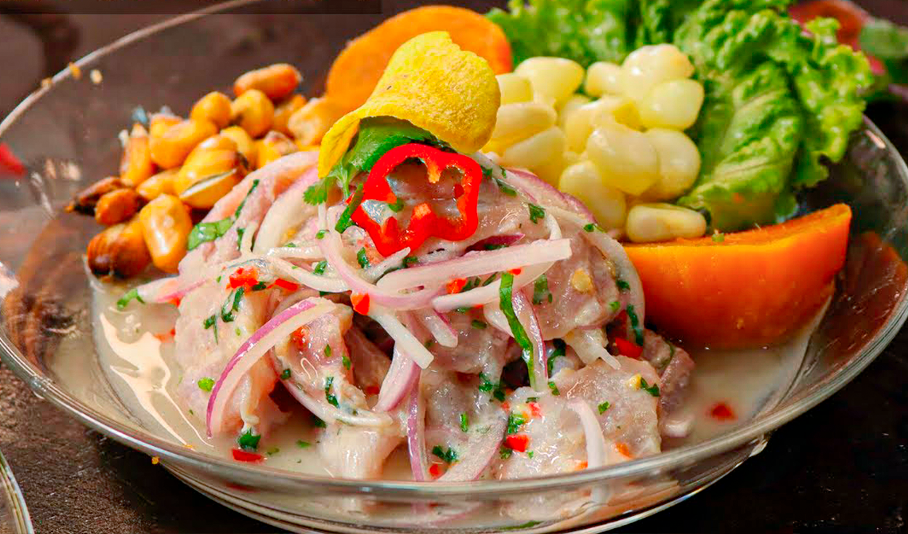

- El ceviche es, sin duda, uno de los platos más icónicos de la cocina peruana. Se trata de pescado o mariscos frescos que se marinan en jugo de limón, generalmente con ají amarillo y cebolla roja. El ceviche se sirve frío y se acompaña con camote (batata), maíz tierno (choclo) y lechuga.
- Lo que hace que el ceviche peruano sea especial es la calidad de los ingredientes frescos y la forma en que el ácido del limón "cocina" el pescado, dejándolo tierno y lleno de sabor. El equilibrio entre el picante del ají amarillo y la acidez del limón es fundamental
- En Perú, encontrarás muchas variaciones regionales del ceviche, como el "ceviche mixto" que incluye varios tipos de mariscos, o el "ceviche de mero" que utiliza un tipo específico de pescado. También hay opciones vegetarianas con hongos u otros ingredientes.
Ceviche
Receta
Ingredientes
- 500 gramos de pescado blanco fresco (como corvina o lenguado), cortado en cubos pequeños.
- Jugo de 8-10 limones (preferiblemente limones peruanos, si están disponibles). 1 ají amarillo fresco, sin semillas ni venas, picado en trozos pequeños (puedes ajustar la cantidad según tu preferencia de picante).
- 1 diente de ajo, picado finamente.
- 1 cebolla roja, cortada en rodajas muy delgadas.
- Sal y pimienta al gusto.
- Hojas de cilantro fresco para decorar.
- Camote (batata) cocido y choclo (maíz tierno) cocido para acompañar.
Instrucciones
- Preparar el pescado: Lava bien el pescado y córtalo en cubos pequeños. Asegúrate de eliminar cualquier piel o espinas. Coloca los cubos de pescado en un recipiente de vidrio o cerámica.
- Marinar el pescado: Exprime el jugo de limón sobre el pescado, asegurándote de que esté completamente cubierto por el jugo. El ácido del limón "cocinará" el pescado. Deja reposar durante unos 10-15 minutos. El tiempo de marinado puede variar según el grosor de los cubos de pescado; deberían volverse opacos y firmes.
- Preparar la salsa: Mientras el pescado se marina, prepara la salsa. En una licuadora, combina el ají amarillo, el ajo, la sal y la pimienta. Agrega un poco de jugo de limón para ayudar a mezclar. La salsa debe ser suave y de un color amarillo brillante.
- Mezclar la salsa con el pescado: Después de que el pescado haya marinado, escúrrelo para eliminar el exceso de jugo de limón. Luego, agrega la salsa de ají amarillo a los cubos de pescado y mezcla bien. Asegúrate de que cada trozo de pescado esté cubierto con la salsa.
- Agregar cebolla roja: Agrega las rodajas de cebolla roja al ceviche y mezcla suavemente. La cebolla roja le dará un toque crujiente y un sabor fresco.
- Servir el ceviche: Sirve el ceviche peruano en platos individuales, decorando con hojas de cilantro fresco. Acompaña con camote (batata) cocido en rodajas y choclo (maíz tierno) cocido. Algunas personas también disfrutan de unas gotas de salsa picante, como la salsa de ají, para darle un toque extra de picante.
Tip:
El ceviche peruano es mejor cuando se sirve fresco y se consume inmediatamente. ¡Disfruta de esta deliciosa preparación que representa la esencia de la cocina peruana!